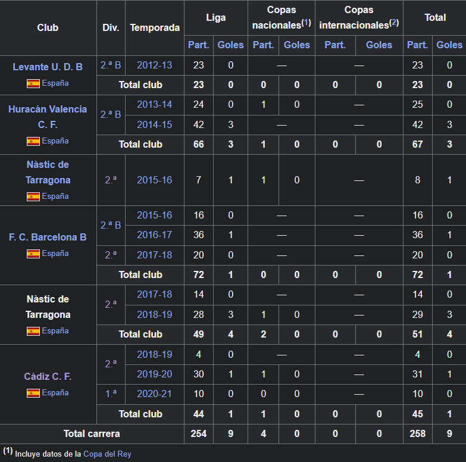

Fali
Valencia, 12 de agosto de 1993 conocido deportivamente como Fali, es un futbolista español. Juega como defensa central y su equipo actual es el Cádiz Club de Fútbol de la Segunda División de España.
Trayectoria
Fali se formó en las categorías inferiores del Villarreal CF desde los diez años...
Pocos meses después fichó por el equipo juvenil del Levante UD...
Tras dos buenas temporadas en el club valenciano...
Estadísticas
Actualizado al último partido disputado el 5 de diciembre de 2020.
